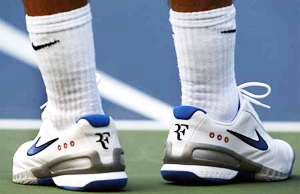
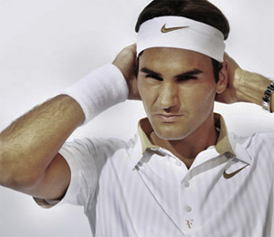
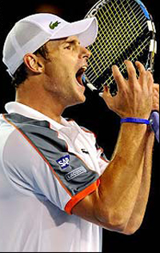
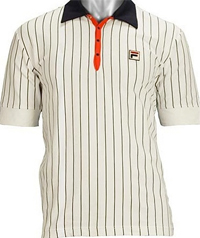
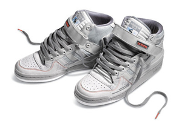
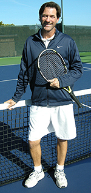
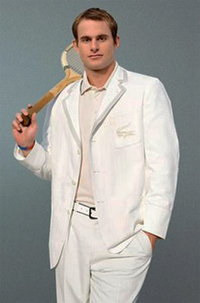

Previous: The Ladder of Gain | 🏠 Mental Game Home | Next: The Loser's Edge
The Look
Comprehensive unified tennis knowledge base — Fundamentals, Stroke Analysis, Reference Library, and more
The Look
Keith Hayes

Can Roger Federer's shoes make you a player?
Can you tell good tennis players just by looking at them? How do they carry themselves? What do they wear? Then again, what is a good tennis player?
I coach a high school team and my number one player definitely has The Look. He wears the exact same shoes as Roger Federer (List price: $120), the same socks ($8/pair), the same shirts ($80 apiece) and the same shorts ($50).
He's tall and handsome, he walks with a swagger and he carries a collection of state-of-the-art Wilson rackets ($179) in a state-of-the-art Wilson racket bag ($60).
In case you're wondering, a player doesn't dress exactly like Roger Federer by accident. Anyone can walk into a sporting goods store and buy a Nike polo shirt, but good luck finding the one that Federer wears with the little "RF" symbol below the bottom button - a shirt that performs no better than the one in the sporting goods store but which costs over twice as much.

Have you got the shirt with the logo under button number three?
No, in order to dress just like Roger Federer, a player must (a) have studied Federer closely enough to discern his exact equipment, (b) have done enough research to know where to buy it and (c) have been willing to throw down some serious cash.
Just by looking at my number one player, you'd probably guess that he was good. On the other hand, another player on the team has also got The Look. Rather than Federer, he emulates another famous and successful champion.
Like my number one player, he has all the right gear, polished strokes and a swagger to go with them. Unlike my number one player, he can't play. Despite his professional trappings, he's neurotic on court and the slightest distraction can send him into an irreversible tailspin.
Although he loses almost every match he plays, his most spectacular losses come against awkward opponents - opponents who don't have The Look. Meanwhile, when he loses to a player who does have The Look, he feels okay about the result because at least it was "good tennis." In other words, losing isn't always losing; if you look good while losing, then, in a way, you still win.

You can act like Roddick, but can you compete like him?
Even this player's on-court meltdowns have The Look; he curses at just the right moments, he rolls his eyes skyward and he throws up his hands in exasperation just like Andy Roddick or Serena Williams when things go wrong. Like Andy and Serena, he has trouble believing that he could possibly be losing. Unlike Andy and Serena, he never wins.
Before you judge me for being harsh, I understand this player because I was just like him in high school: a poser. Bjorn Borg was number one back then and, in order to achieve his look and style, I badgered my parents into buying the same astronomically-priced Fila gear that he wore on tour.
The problem was, I failed to copy Borg's work ethic or his consistency and determination. I had The Look, but I didn't have The Fight. Like the poser on my current team, I lost almost all of my matches.
In those days I never quite made the connection between hard work and winning. I studied Borg - as well as other pros and even top juniors I competed against - and I copied their clothes, their strokes, and even their mannerisms. I walked like a pro and I talked like a pro, but I didn't play or compete like one.

As a junior, I badgered my way to Fila pinstripes.
I've found that having The Look guarantees one thing and only one thing: that a player will have The Look. People who have The Look may well have The Strokes, too - but even that's not necessarily a given.
When I was a kid, Borg's Fila pinstripes transcended the sport. In those days tennis was sexy. You might have seen Vitas Gerulaitis at Studio 54 discoing down in his Sergio Valentes, but you'd have been just as apt to find Rick James or Mick Jagger across the floor in their Fila and Tacchini. Having The Look might suggest a minimum degree of competence on the court, but then again, it might not.
In college, I matured slightly and changed my look. Pepperdine had one of the top five teams in the nation back then and I was lucky enough to know their Hall of Fame coach, Allen Fox. Watching these world-class players and listening to Fox's ideas on strategy and mental toughness forced me to reevaluate my own philosophy.
Upon sober reflection, I concluded that my game needed work, and that it was wiser to develop my skills than my image. That decision ushered in my Shabby Look.

High top sneakers - a key element in the Shabby look
During my Shabby period, I worked hard to overhaul my flimsy tennis game but I also made a point of looking as sloppy and as unkempt as possible on the court. I grew long hair and I didn't shave. I'd wear gray hiking socks with high-top sneakers, baggy shorts, a bandana and old concert t-shirts.
With the Shabby Look, I never worried about new opponents overestimating my skills; on the contrary, the Shabby Look probably gave me a slight edge because opponents would take one look at my squalid appearance and assume I hadn't been playing long.
Between high school and college I had gone full circle, from a poser who tried to convince people he was better than he actually was to a hustler of sorts who deceived opponents into thinking he was worse than he actually was. I won a few more matches with the Shabby Look, but I was still decidedly posing.

Today I'm at peace with the Respectable Look.
I stayed with the Shabby Look through college and for the next several years. While I never made a conscious decision to abandon the Shabby Look, I gradually outgrew it.
One day, the gray socks disappeared and white ones replaced them. At some point I substituted real tennis shorts for the old basketball shorts and so on - and before I knew it I was back in proper tennis attire. The Shabby Look subconsciously morphed into the Respectable Look, and I'm hoping it never morphs back.
Today, I'd like to think I'm at peace with my Look. Since I now spend more of my time on the court teaching and coaching than actually playing, it does pay to look presentable.
Still, the Respectable Look goes deeper than just good business. I no longer feel compelled to wear the most expensive gear or the same stuff the current pros are wearing, but I do take a certain pride in the image I project when I step out onto a court.
I want my outfits to be neat and tidy - no wrinkles, snags or stains, and I like the colors and brands to match - but I no longer choose my tennis clothes in some vain attempt to influence opponents. At this stage, I just want to appear as though I care about the sport.
If opponents look at my clothes and conclude that I'm trying to impress them, I can't worry about that. If my matching outfits motivate opponents to want to beat me, then so be it. At this stage I'd rather have an opponent play his hardest anyway. If I lose, I can deal with it, but I'd rather try to beat an opponent at his best than steal the match because I somehow suckered him into taking it too lightly.

Your Look should only matter to you.
My journey has led me to my current look, but the real point is that the clothes I wear on the court shouldn't matter to anyone but me. I try not to choose them because anyone else is wearing them and I try not to wear them to impress anyone else - except, perhaps, to show a certain degree of respect.
Of course, the other side of the coin is that I no longer try to gauge my opponents by what they're wearing, either. When I think back on nearly forty years in the game, I've met nice guys who dress well and I've met idiots who dress well, too - but I've also met all kinds, from gentlemen to jerks, who favor the shabby look.
The older I get, the better I understand that style - whether on the tennis court or off - isn't about copying other people or trying to look like something you're not. Style is knowing yourself and coming to terms with who you are. Style is understanding what works for you and wearing it with confidence.
Once I got to that point, my game got better, too - and people finally started showing me the respect I tried so desperately to earn when I was young and searching for a Look.

USPTA instructor Keith Hayes attended Pepperdine University in the 1980s. There, he encountered Head Tennis Coach Allen Fox and became a counselor at his summer tennis camps, beginning a tennis teaching career - and a friendship with Allen - that has continued ever since. After Pepperdine, Keith went to work in the San Francisco Bay Area advertising and graphic design industries. Later he also became an English teacher.
As head coach of the Marin Catholic High School women's tennis team, Keith won back-to-back Division II North Coast Section titles in 2008 and 2009. When he's not teaching tennis, Keith continues to work as a freelance writer and designer. In addition to Tennisplayer.net, his stories have also appeared in TENNIS magazine.
Source: tennisplayer.net archive — The Look.docx (John Yandell teaching library, 2002-2022). Extracted and rendered as HTML for Tennis Future Lab.